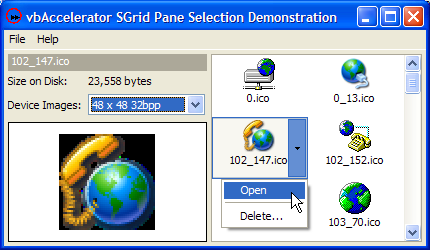
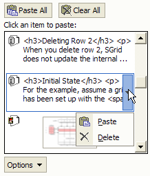
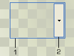

VB5 Pane Selector Demonstration (180K)
VB5 Pane Selector Demonstration (180K)
 VB5 Pane Selector Full Source (195K)
VB5 Pane Selector Full Source (195K)
 VB6 Pane Selector Demonstration (180K)
VB6 Pane Selector Demonstration (180K)
 VB6 Pane Selector Full Source (195K)
VB6 Pane Selector Full Source (195K)
 24 Jan 2004
24 Jan 2004
First Posted
 Subclassing Without The Crashes
Subclassing Without The Crashes
 Using the System Image List with (and without) vbAccelerator Controls
Using the System Image List with (and without) vbAccelerator Controls
 A window that's star-shaped, circular or tank-shaped
A window that's star-shaped, circular or tank-shaped
 Reading and Saving .ICO files and resources in VB
Reading and Saving .ICO files and resources in VB

Panel Selector Control
This article provides a regional selection control which can be floated over other controls to provide additional options for the selected item. The demonstration then shows how to use the control in conjunction with SGrid 2.0 in hot-tracking mode to provide an interface similar to the lists in the TaskPane in Microsoft Office XP.
About The Panel Selector Control
In Office XP, there are a series of TaskPanes which provide contextual functions whilst working with documents. The Clipboard TaskPane is one example:
The Office XP Clipboard TaskPane
The highlighted item can either be selected directly, or you can choose the drop-down to pick some additional options. Presumably the main rationale for this is to make it directly obvious that there is more than one thing you can do with the hot item, rather than assuming that the user will right-click to find out. It's also a way of allowing you to perform one of many actions on an item that doesn't really have any sort of selection state.
Although Office integrates the highlighting functionality into the drawing of the selection, I wanted to create a the same effect in a reusable form, hence a control.
Implementing a Pane Selector
If this is to implemented as control, you need to provide a control that is transparent except for the border and the button, so the underlying control can be seen through and selected if desired. In theory this is possible using WindowLess UserControls in VB6 using the MaskPicture property, but that isn't ideal. A simple to use alternative is to use the SetWindowsRgn to modify the shape of a Window, as described in the Geometric Windows Shapes article.
To make the control work like the one in Office XP, the Window's shape should have two disconnected regions; one region being a single-pixel wide border, and the other a rectangle for the button; as shown in the below:
Pane Selector Control Regions
Setting this up in code isn't too tricky as Windows provides lots of functionality for combining regions together. You simply need to combine a region which is the difference between the outside and the inside of the border with the region for the button. Here's the code:
Private Type RECT
left As Long
top As Long
right As Long
bottom As Long
End Type
Private Declare Function GetClientRect Lib "user32" ( _
ByVal hWnd As Long, lpRect As RECT) As Long
Private Declare Function SetWindowRgn Lib "user32" _
(ByVal hWnd As Long, ByVal hRgn As Long, _
ByVal bRedraw As Long) As Long
Private Declare Function CreateRectRgn Lib "gdi32" _
(ByVal X1 As Long, ByVal Y1 As Long, _
ByVal X2 As Long, ByVal Y2 As Long) As Long
Private Declare Function DeleteObject Lib "gdi32" _
(ByVal hObject As Long) As Long
Private Declare Function CombineRgn Lib "gdi32" _
(ByVal hDestRgn As Long, _
ByVal hSrcRgn1 As Long, ByVal hSrcRgn2 As Long, _
ByVal nCombineMode As Long) As Long
' Region combination types:
Private Const RGN_AND = 1
Private Const RGN_COPY = 5
Private Const RGN_DIFF = 4
Private Const RGN_MAX = RGN_COPY
Private Const RGN_MIN = RGN_AND
Private Const RGN_OR = 2
Private Const RGN_XOR = 3
' Region combination return values:
Private Const COMPLEXREGION = 3
Private Const SIMPLEREGION = 2
Private Const NULLREGION = 1
...
Dim rc As RECT
Dim rcIn As RECT
Dim bRightToLeft As Boolean
Dim hRgnOutBorder As Long
Dim hRgnInBorder As Long
Dim hRgnButton As Long
Dim lR As Long
bRightToLeft = UserControl.RightToLeft
GetClientRect UserControl.hWnd, rc
m_hRgn = CreateRectRgn(0, 0, 0, 0)
hRgnOutBorder = CreateRectRgn( _
rc.left, rc.top, rc.right, rc.bottom)
LSet rcIn = rc
InflateRect rcIn, -1, -1
hRgnInBorder = CreateRectRgn( _
rcIn.left, rcIn.top, rcIn.right, rcIn.bottom)
lR = CombineRgn(m_hRgn, hRgnOutBorder, hRgnInBorder, RGN_DIFF)
m_rcButton.top = rcIn.top + 1
m_rcButton.bottom = rcIn.bottom - 1
If (bRightToLeft) Then
m_rcButton.left = rcIn.left + 1
m_rcButton.right = rcIn.left + m_lButtonWidth + 1
Else
m_rcButton.left = rcIn.right - m_lButtonWidth - 1
m_rcButton.right = rcIn.right - 1
End If
hRgnButton = CreateRectRgn( _
m_rcButton.left, m_rcButton.top, _
m_rcButton.right, m_rcButton.bottom)
lR = CombineRgn(m_hRgn, m_hRgn, hRgnButton, RGN_OR)
DeleteObject hRgnButton
DeleteObject hRgnInBorder
DeleteObject hRgnOutBorder
SetWindowRgn UserControl.hWnd, m_hRgn, 1
Once that's done the rest of the control is pretty straightforward.
Using the Control with SGrid 2.0
The sample presented here is an Icon Browser which shows all of the icons in a particular directory and allows you to open or delete them. Icon information is extracted using the IconEx class. Although SGrid 2.0 has a number of powerful formatting options, it doesn't have one for showing centrally aligned icons with text underneath. Therefore this sample uses the Owner-Draw cell facility of the grid to render a customised cell. The following code does the trick, using a System Image List to draw the icon directly from the ICO file on disk:
Implements IGridCellOwnerDraw
Private m_cIml As cVBALSysImageList
Private Sub Form_Load
grdIcons.OwnerDrawImpl = Me
End Sub
Private Sub IGridCellOwnerDraw_Draw( _
cell As cGridCell, _
ByVal lHDC As Long, _
ByVal eDrawStage As ECGDrawStage, _
ByVal lLeft As Long, ByVal lTop As Long, _
ByVal lRight As Long, ByVal lBottom As Long, _
bSkipDefault As Boolean
)
'
If (eDrawStage = ecgBeforeIconAndText) Then
'
bSkipDefault = True
' Draw icon
Dim lIconX As Long
Dim lIconY As Long
lIconY = lTop + 2
lIconX = lLeft + (lRight - lLeft - m_cIml.IconSizeX) \ 2
m_cIml.DrawImage cell.Text, lHDC, lIconX, lIconY
' Draw text
Dim rc As RECT
rc.left = lLeft + 1
rc.right = lRight - 1
rc.top = m_cIml.IconSizeY + 4
rc.bottom = lBottom - 1
DrawTextA lHDC, fileNameOf(cell.Text), -1, rc, cell.TextAlign
'
End If
'
End Sub
With that in place the pane selector control can be displayed in the appropriate location. Putting the grid into Hot Tracking mode using the HotTrack property means it raises the HotItemChange event whenever the mouse over item changes. The ScrollChange event is also raised whenever the user scrolls the grid. Using these two events we can position the Pane Selector control over the grid in the correct place:
Private Sub grdIcons_HotItemChange(ByVal lRow As Long, ByVal lCol As Long)
If (m_bShowingMenu) Then
Exit Sub
End If
If (lRow > 0) And (lCol > 0) Then
Dim lLeft As Long
Dim lTop As Long
Dim lWidth As Long
Dim lHeight As Long
grdIcons.CellBoundary lRow, lCol, lLeft, lTop, lWidth, lHeight
If (grdIcons.top + lTop < 0) Then
paneSelector.Visible = False
Else
paneSelector.Move _
grdIcons.left + _
IIf(lCol = 2, _
grdIcons.ColumnWidth(1) * Screen.TwipsPerPixelX, _
0), _
grdIcons.top + lTop, _
grdIcons.ColumnWidth(1) * Screen.TwipsPerPixelX, _
lHeight
If Not (paneSelector.Visible) Then
paneSelector.Visible = True
End If
End If
paneSelector.ZOrder
Else
paneSelector.Visible = False
End If
End Sub
Private Sub grdIcons_ScrollChange(ByVal eBar As ECGScrollBarTypes)
'
grdIcons_HotItemChange grdIcons.HotRow, grdIcons.HotCol
'
End Sub
Note that we don't want the selector control to appear with parts showing off the top of the grid control. This is achieved by making the grid and the pane selector control children of a PictureBox control, which would clip the Pane Selector when you attempt to move it off the top of the grid. However, I discovered that Windows gets confused about the region of the control if the top coordinate is clipped, and hence the code includes a check that hides the selector if its top coordinate would be off the top of the grid.
Conclusion
This article provides a reusable pane selector control and demonstrates how to integrate it as a floating selection control over the SGrid 2.0 control.